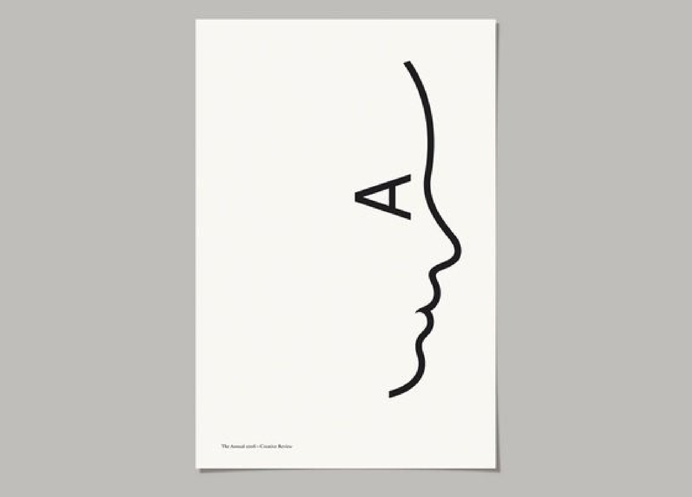
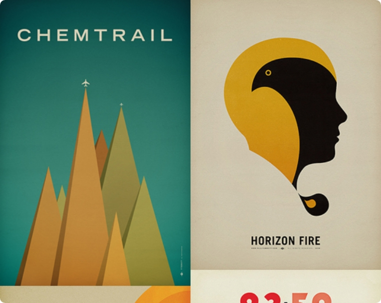
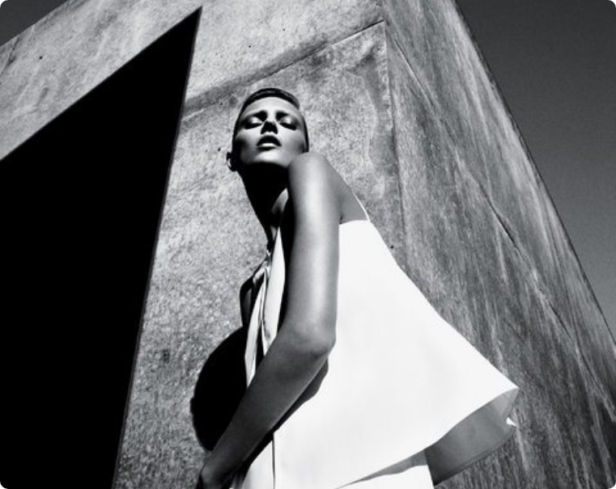
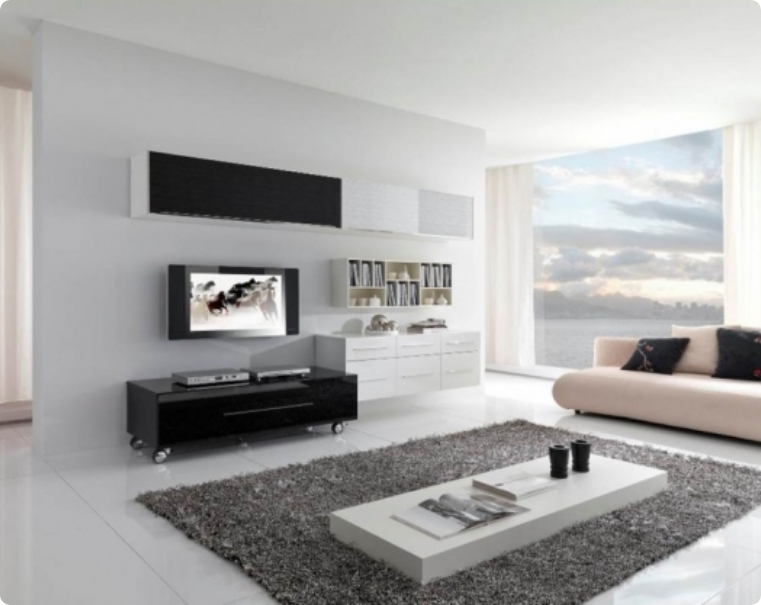
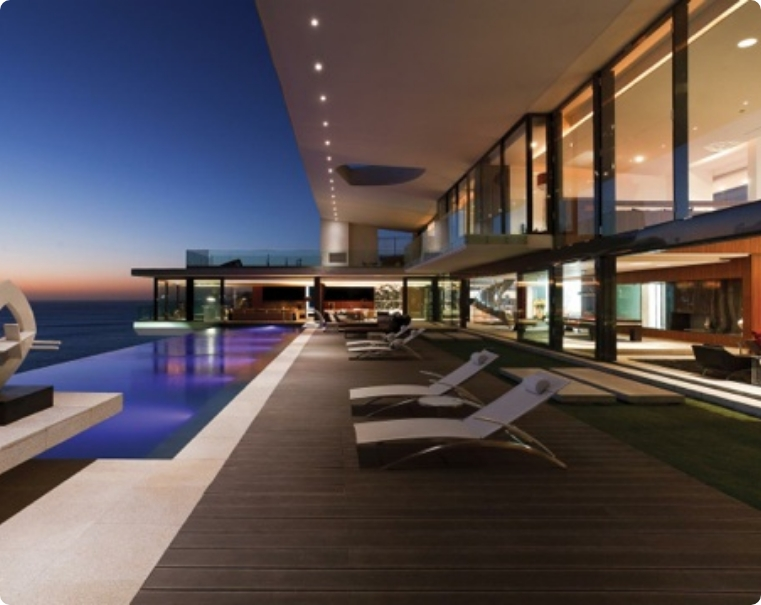

Minimalism
là gì?
Minimalism, hay còn gọi là chủ nghĩa tối giản, là một phong cách thiết kế phát triển mạnh mẽ ở Mĩ trong những năm của thập niên 60 và 70. Dưới góc độ thiết kế, tối giản có nghĩa là giảm thiểu tối đa các chi tiết thừa, mọi chi tiết trong thiết kế từ các hình khối, bảng màu, cho tới typography đều chỉ sử dụng nếu cần thiết.
Chủ nghĩa tối giản lên ngôi và trở thành xu hướng mới trong cuộc sống hiện đại và thiết kế đồ hoạ không phải là ngoại lệ. Bởi lẽ, ánh mắt và não bộ con người chỉ dành sự chú ý cho một số chi tiết nhất định trong bản thiết kế, chính vì vậy, những thiết kế với các chi tiết tối giản dễ dàng thu hút được ánh mắt của người xem và gây ấn tượng trong trí nhớ của họ.
Điều này khiến minimalist - phong cách tối giản ngày càng được ứng dụng vào nhiều lĩnh vực trong thiết kế, từ thiết kế logo, ấn phẩm truyền thông và in ấn đến các bao bì sản phẩm, … Dường như các thiết kế theo chủ nghĩa này luôn giành được những sự yêu thích nhất định từ người xem.
Xu hướng thiết kế minimalist
Ở khắp mọi nơi, bạn đều có thể tìm thấy các thiết kế theo chủ nghĩa này.

Minimalism
ảnh hưởng
như thế nào?
Minimalism ảnh hưởng đến tất cả loại hình nghệ thuật và công nghệ trong những năm cuối thế kỷ 20, chẳng hạn như hình thức gallery. Ngoài sức ảnh hưởng sâu sắc của mình đối với nghệ thuật hiện đại và các nghệ sĩ, Tối giản đã trở nên phổ biến như một triết lý và một cách sống.
Nghĩa là Tối giản giải quyết các vấn đề trong cuộc sống chỉ với những yếu tố cần thiết, xua đuổi bất cứ điều gì mà họ cho là không cần thiết.
Trái với những gì mọi người thường nghĩ, Tối giản được coi là phong cách của giới siêu giàu. Nó không bao giờ được lấy cảm hứng từ sự nghèo đói hay tiết kiệm. Người tạo ra và sử dụng phong cách này có ý nghĩ là: Tôi có thể có bất cứ điều gì, nhưng tôi sẽ không làm lộn xộn, thay vào đó tôi sẽ chỉ trang trí nhưng thứ thanh lịch nhất, đối tượng đơn giản có sẵn. Người biết sẽ không bao giờ nói minimalism là một lựa chọn rẻ.

Minimalism
trong thiết kế
Tối giản trong Đồ họa (Minimalist Graphic) là loại bỏ những thiết kế rườm rà và những màu sắc không cần thiết, tập trung vào sự đơn giản và đơn sắc. Tuy nhiên, những người thiết kế cũng không được làm mất đi tính chất và nội dung cần thể hiện của sản phẩm/ thông điệp. Việc truyền tải một thông điệp đầy đủ với hình ảnh thu hút nhưng không cầu kỳ là một thách thức lớn.
Minimalism
trong nhiếp ảnh
Tối giản trong Nhiếp ảnh (Minimalist Photography) là nắm bắt và chụp cảnh nghệ thuật với một tông màu chủ đạo. Thêm vào đó, đối tượng ở đây không cần qua nhiều, chỉ vừa đủ với khung cảnh. Cần có sự hài hòa về màu sắc và cảnh vật để bức ảnh vùa thu hút người xem, vừa giản đơn.

Minimalism
trong thời trang
Tối giản trong Thời trang (Minimalist Fashion) là những bộ trang phục với 1 đến 2 tông màu chủ đạo. Thêm vào đó, thiết kế của những bộ đồ này phải thuộc dạng rất khéo léo và tinh tế để khi kết hợp thì là một vẻ tối giản sang trọng chứ không phải là tầm thường. Thường người nhìn hay chú ý đến những kiểu dáng khi nhìn thấy bộ đồ thời gian và có thể dễ dàng thu hút bởi sự thể hiện đơn giản mà sang trọng.
Minimalism
trong nội thất
Tối giản trong Nội thất (Minimalist Interior/ Indoor desgin) luôn có tính mạnh mẽ, hiện đại, rõ ràng của đường nét và mảng khối. Đặc biệt các khoảng trống và ánh sáng được chú trọng và đề cao, và thiết kế nội thất theo phong cách này là thiết kế từ khoảng trống đến khoảng đặc của đồ nội thất cũng như ánh sáng lẫn khoảng tối của không gian nội thất.


Minimalism
trong ngoại thất
Ngoại thất (Minimalist Outdoor Design) theo phong cách này cũng gói gọn trong hai chữ “Hạn chế”. Hạn chế trong trang trí, hạn chế bố trí quá nhiều ngoại thất, hạn chế về số lượng cây cối, chỉ giữ lại thành phần nào thật sự cần thiết và đáp ứng được yêu cầu về công năng lẫn thẩm mỹ. Những chính sự hạn chế này lại khắc phục được nhược điểm về diện tích của sân vườn.
Kết luận
Trong thế giới thiết kế đồ hoạ rộng lớn, những thiết kế theo minimalism vẫn luôn thu hút được sự chú ý của người xem nhờ sự nhẹ nhàng, dễ chịu và thư giãn mà các thiết kế này mang lại. Hi vọng với những chia sẻ trên sẽ giúp các bạn hiểu rõ hơn về minimalism và các xu hướng thiết kế theo minimalism phổ biến hiện nay.